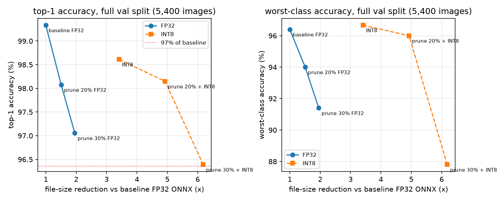

Team: Valiant Joy Model: Valiant Joy Submission: student_model_int8.onnx (input (1, 3, 224, 224), ONNX opset 13, QDQ)
Starting point: the provided student_mobilenetv2_distilled.pt. Final model: 20% structured channel pruning, 600-step recovery fine-tune, static INT8 (QDQ). All numbers below were measured on the same machine with the same scripts and settings (sec2026/measure.py); the baseline is the provided checkpoint exported to FP32 ONNX, because the submission is ONNX and Section 5.4 asks for identical methods for baseline and final.
| Baseline (FP32 ONNX) | Final (prune 20% + INT8) | Ratio | |
|---|---|---|---|
| Top-1 accuracy (5,400 val images) | 99.33% | 98.15% | 98.8% retained |
| Worst-class accuracy | 96.40% (PermanentCrop) | 96.00% (PermanentCrop) | -0.40 pt |
| Parameters | 2.220 M | 1.470 M | 1.51x fewer |
| File size | 8.51 MiB | 1.73 MiB | 4.92x smaller |
| MACs | 0.300 G | 0.224 G | 1.34x fewer |
| Latency, local CPU (mean of 50 runs) | 6.49 ms | 5.98 ms | 1.09x faster |
| Peak RAM, raw process RSS | 82.3 MB | 71.1 MB | 1.16x lower |
Energy, CodeCarbon (measured, windows_emi) | 0.1475 J | 0.1174 J | 1.26x lower |
| AI Hub, Dragonwing RB3 Gen 2 (ONNX Runtime, CPU) | 28.15 ms, 27.3 MB | 5.64 ms, 24.4 MB | 5.0x faster, 1.12x lower |
Measurement machine: MSI Bravo 15, AMD Ryzen 7 4800H (8 cores / 16 threads, AVX2, no AVX-VNNI), 16 GB RAM, CPU only, Windows 11 (build 26200), Python 3.11.9, PyTorch 2.14.0, ONNX Runtime 1.30.0. Latency, peak RAM and energy are medians of 3 sessions, each in a fresh process, whole-machine CPU load recorded before each session (4-16%).

submission_v1). We compared four calibrations on 256 training images. MinMax lost 1.4 points and the worst class fell to 93.0% (output SQNR 15.6 dB). Percentile (99.999) calibration with reduce_range (7-bit weights, the ONNX Runtime recommendation for x86 CPUs without VNNI, which this one lacks) kept 98.61% and the worst class at 96.67%. Result: 3.42x smaller file, but no latency gain on this laptop (6.53 vs 6.49 ms): without VNNI the INT8 kernels are no faster than FP32. On AI Hub's RB3 Gen 2 (Arm CPU) the same file runs 4.1x faster than FP32 (6.83 vs 28.15 ms) and the pruned final model 5.0x faster (5.64 ms), so the gain is hardware-dependent; peak memory there rose 11% (30.2 vs 27.3 MB), which we report rather than hide.The organisers told teams verbally to produce val_split.json and baseline_metrics.json themselves; both are ours, not official files. The split is class-stratified 80/20 with seed 42 over torchvision's EuroSAT order (21,600 train / 5,400 val; generated by sec2026/make_split.py, byte-for-byte reproducible). Caveat: the provided student was trained on the organisers' own split, so our val images may include some it has seen; baseline accuracy may be optimistic, but baseline and final are scored on the same images, so the ratios are fair. Calibration and fine-tuning use train images only.
Every step is a script under code/sec2026/ (see REPRODUCE.md): make_split.py, measure.py (Section 5 methods), export_quant.py (Section 6.2), prune_sweep.py (Section 6.1), aihub_profile.py (Section 7), make_metrics.py (Section 8). The raw results of every run are in results/.